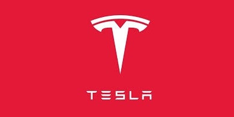
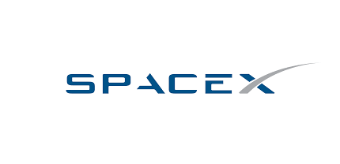
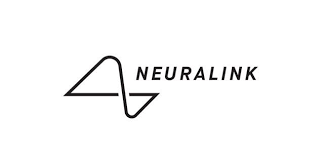
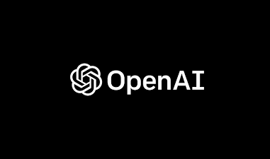
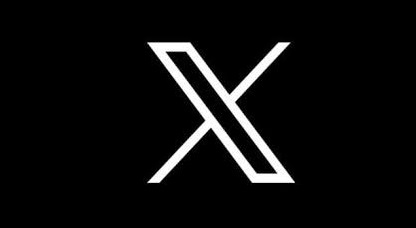

Empresario, inventor e ingeniero conocido por ser una de las figuras más influyentes en la industria tecnológica y espacial. Ha enfocado su misión principal en tres áreas de exploración en las que está dedicando sus esfuerzos: avances tecnológicos e Internet, la colonización del espacio (incluyendo la meta de llevar una nave tripulada a Marte para 2030) y el desarrollo de energía renovable como alternativa a los combustibles fósiles.
¿Quien es Elon Musk?
Algunas de las empresas y proyectos más destacados asociados con Musk
Tesla, Inc
Elon Musk es el cofundador y CEO de Tesla, una empresa de automóviles eléctricos y energía renovable. Tesla se ha destacado por su enfoque en la movilidad sostenible y la producción de vehículos eléctricos populares como el Model S, Model 3, Model X y Model Y.
SpaceX
Musk es el fundador y CEO de SpaceX (Space Exploration Technologies Corp.), una empresa espacial privada que ha revolucionado la industria espacial con la reutilización de cohetes y la ambición de colonizar Marte. SpaceX ha lanzado numerosas misiones exitosas y está desarrollando la nave espacial Starship.
SolarCity
Aunque no es fundador, Musk desempeñó un papel importante en SolarCity, una empresa de energía solar fotovoltaica que se fusionó con Tesla. SolarCity se centró en proporcionar soluciones de energía solar residencial y comercial.
The Boring Company
Musk fundó esta empresa para abordar problemas de tráfico en áreas urbanas a través de la construcción de túneles de alta velocidad para el transporte subterráneo.
Neuralink
Musk cofundó Neuralink, una empresa que se centra en la tecnología de interfaces cerebro-máquina (BCI) con el objetivo de fusionar la mente humana con la inteligencia artificial.
OpenAI
Aunque no es fundador, Musk ha estado involucrado en OpenAI, una organización de investigación en inteligencia artificial con el objetivo de desarrollar IA avanzada de manera ética.
X
Elon Musk ha adquirido la plataforma de redes sociales Twitter, que ha sido rebautizada como "X". A través de continuas actualizaciones, modificaciones de políticas y la búsqueda de una "aplicación todo en uno", el fundador de Tesla ha generado controversia a nivel global.
"UNA TECNOLOGIA SUFICIENTEMENTE AVANZADA ES INDISTINGUIBLE DE LA MAGIA."
ARTUR C. CLARK
El magnate es conocido por su visión audaz y su enfoque en la innovación tecnológica en una variedad de campos, desde la movilidad eléctrica hasta la exploración espacial y la inteligencia artificial. Su trabajo ha tenido un impacto significativo en estas industrias y en la percepción de lo que es posible en el ámbito de la tecnología y la ciencia.